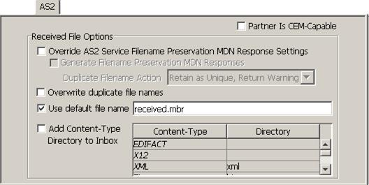

| AS2 Checklist / AS/400 PC Network Access Setup | |
If you are using AS2, in most cases you will need to define a default file name where the received entries will be stored. An AS/400 file must be specified in the form: /QSYS.LIB/LIBRARY.LIB/OBJECT.FILE/FILE.MBR.
To accommodate this format requirement, on the panel, add a file name with a .mbr extension, as illustrated below:
